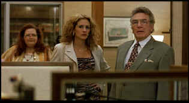

| Erin
Brockovich (SE)/B+,A |
| Universal/2000/ 132/ANA
1.85 |
The rhythms
of Erin Brockovich are terrific. Soderbergh's sense of timing, knowing
when to quit or go further, are uncanny. I have never seen swifter or more
efficient montage work in a film. It gets the job done eloquently.
Erin Brockovich is based on the real story of the title
character. Brockovich, an out-of-work single mother, practically forces
her way to work at the law offices of Ed Masry, the lawyer who had handled
her unsuccessful auto accident law suit. She doesn't fit in at
Masry's office, but her natural grit and a feisty intelligence lead her to
discover some unusual case papers in a simple pro bono real estate
deal. There's a bit of girl detective in Erin Brockovich as she seeks out
the truth and battles resistance at various roads. But it's a fascinating
watch, again brought to beautiful life by Soderbergh's uncanny filmmaking
gift. The director consistently raises the film above the raw material.
 |
| Getting
ready to do battle. ©Universal |
This spirited tale is based actual events with a protagonist that just never gives up. Erin Brockovich's indomitable
spirit is captured with charm and energy by Julia Roberts. This is
possibly Julia Roberts' best screen role, certainly her best dramatic
achievement. Roberts brings a
terrific humor to the character, even when things are not going her way.
It's easy to cheer for Erin to succeed, and even when she's not totally in
the right, Roberts makes her so engaging, you never stop siding with her.
Albert Finney, other than a couple of too cute flourishes, makes a perfect
Ed Masry.
Erin Brockovich has two romances going for it.
Erin's personal life and romance is filled in by next door neighbor,
biker George, leather jacket, tattoos and all. George is often too good to
be true and there are some gaping holes in their relationship. But this is
the proper material to sacrifice. Aaron Eckhart gives another
credible performance, though he's left out in the cold far too much. But
the real romance of Erin Brockovich is between Masry and Brockovich. No,
it's not what you would call a traditional romance, but there's certainly
a seduction going on and Roberts and Finney makes the sparks fly with more
good humor.
Positively filmlike, the transfer includes a
great variety of lighting situations and unfailingly presents them with
life. There is no edge enhancement whatsoever and no excess noise in the
picture. Colors are lively, accurate, and stable. Flesh tones are
presented in a wide and subtle spectrum. The on-target quirky score from
Thomas Newman enhances the production and is recorded on the DVD with nice
separation and excellent level control. . Once again, cinematographer Ed
Lachman's collaborative work with Soderbergh delivers the goods and is
captured to perfection on this very fine DVD.
The heart of the special edition are 25 deleted
scenes that can be played with or without the commentary of director
Steven Soderbergh. The scenes are all good, but you can see that they
don't really advance the film or make it better. Some are funny, some are
poignant, but is the film better for them. It's a tough call a filmmaker
must always make, and in this case, Soderbergh's ruthless selection brings
a natural length to the film.
|
|

Selections from the feature archive
include articles on
Akira Kurosawa, Frank
Darabont, Blonde
Bimbos, Hollywood
Street Gangs, or Vietnam:
The Hollywood Pariah, and many more....
The
Exquisite Muse of Zhang Yimou

The powerful image-making of Zhang
Yimou has revealed itself in virtually every film he has made. Coupled
with his remarkable collaboration with actress Gong Li, Zhang's has
built a stunning body of work Click the image to read all about
it.


Cyber Theater
is an outstanding source for accurate video information.
Check out their 16 x 9 format guide for a thorough understanding
of DVD encoded that way.
 
The Big Combo
has style to spare in reviewing films and producing feature
articles. Check out their special "Lingo" section.

The
DVD Answer Man is a new site devoted to spreading
the DVD gospel. Answers to questions, reviews, links and
more....

The official site for information about the great comic
director. A treat for connoisseurs of classic Hollywood madcap.
 The
online site for Film
Comment Magazine includes all the information you need to
know about cinematic events sponsored by the Film Society of Lincoln
Center. The
online site for Film
Comment Magazine includes all the information you need to
know about cinematic events sponsored by the Film Society of Lincoln
Center.

The
Movie Poster Archive includes extensive poster images from the
films of stars like Susan Hayward, Kirk Douglas, Katharine
Hepburn and many more. Our featured star is Lana
Turner.
|